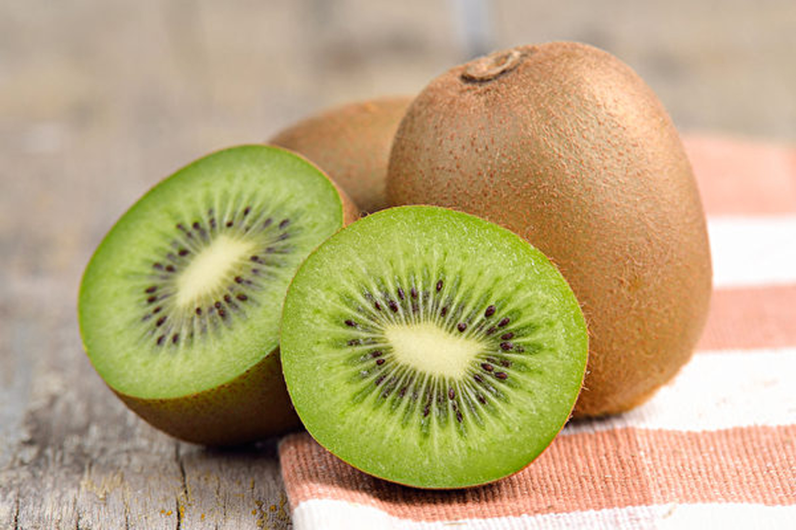

天天吃奇異果通常是安全的，但建議多樣化飲食，包括各種不同的水果，以獲取各種營養素；不過，奇異果的膳食纖維含量相當豐富，過量食用可能會導致腸胃消化功能過於刺激，引起不適感。
奇異果是一種營養價值高的水果，每天食用1顆已經足夠滿足人體對許多營養的需求。
一般來說，普通人的食用量最多不需要超過3顆，過量食用可能會導致腹瀉等消化不適的情況，
因此，適度地享用奇異果，能夠確保獲取營養，同時避免不必要的身體不適。

奇異果功效: 改善呼吸系統健康
奇異果所含的大量維生素C和抗氧化劑，可以增強免疫力並幫助減緩氣喘症狀，一項研究發現，經常吃奇異果等新鮮水果，可以改善肺功能，還可幫助易受感染的兒童減少呼吸困難等喘息狀況。 但是不是所有人都適合吃奇異果，有些人會對奇異果產生過敏反應，包括喉嚨癢、舌頭腫脹、吞嚥困難、嘔吐及蕁麻疹(Hives)等，若您本身對酪梨、小麥、榛果、無花果等食物過敏，可能也會對奇異果過敏。
資料來源: